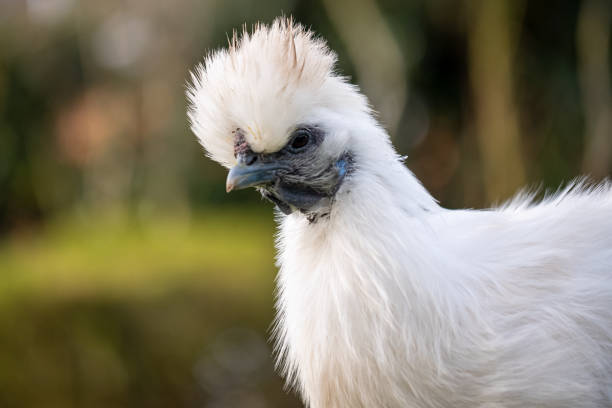
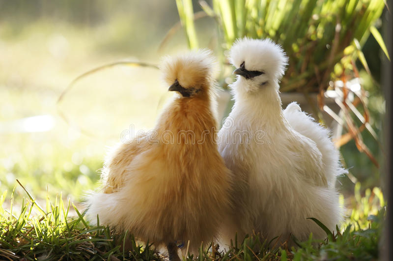
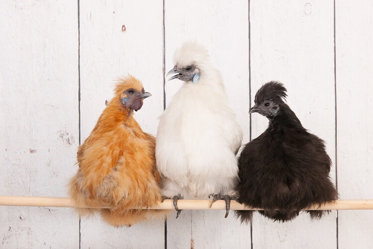

VENTA DE SILKIES
ORNAMENTALES

Gallinas Silkies
El Silkie es una raza de pollo llamada así por su plumaje atípicamente esponjoso, como
también
sedoso. La raza tiene varias otras cualidades inusuales, como piel y huesos negros, lóbulos
de las orejas azules y cinco dedos en cada pie, mientras que la mayoría de los pollos solo tienen cuatro.
Dos grandes cualidades
Cuidan bien a las crías. A pesar de que ponen solo unos tres huevos por semana, se
usan
comúnmente para incubar huevos de otras razas y especies de aves debido a su naturaleza.
Una ave ornamental que por sus características estéticas como su plumaje llamativo
son las
favoritas para tener en casa y adornar los espacios.


Sus características
Una gallina fértil pone entre hasta 150 huevos al año de tamaño pequeño a mediano.
Su periodo de incubación dura de 19 a 21 días
Las gallinas sedosas son una especie de ave amigable y social capaz de establecer
vínculos
y diferenciar a sus dueños.
Debido a su estética atrayente, esta ave tiene una buena demanda en el
mercado alcanzando el valor de 50 a 60 soles por una gallina joven y sus huevos costando 5 soles.
Las gallinas sedosas son conocidas por ser excelentes madres y se utilizan a menudo
para
incubar y criar polluelos de otras razas.